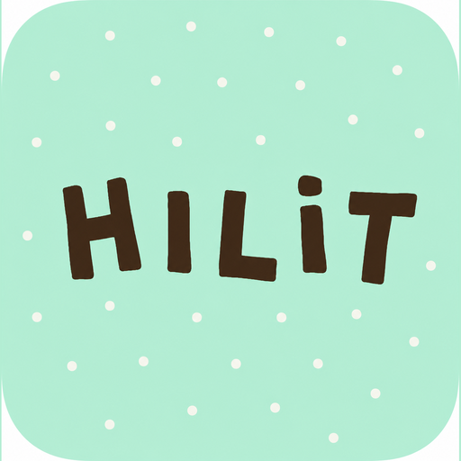

하일릿만의 자동 편집
“자동 컷, 인물 트래킹”
영상 속 나를 한 번 짚어 주면 됩니다. 20분을 앞뒤로 넘겨 가며 찾지 않아도 됩니다.
한 번 지정하면 사람이 앞을 지나가거나 화면 밖으로 나갔다 들어와도 같은 사람으로 다시 이어 붙입니다.
예시 영상 자리
자동 컷 · 인물 트래킹 결과 — 소재 준비 중
AS-IS
20분짜리 영상을 처음부터 끝까지 넘겨봅니다.
내가 나온 장면을 찾고, 다시 찾고, 또 찾아봅니다.
그러다 문득 생각합니다.
“이걸 언제 다 찾고, 언제 편집하지?”
결국 편집 앱을 닫습니다.
드디어 한 편을 완성했습니다.
올릴까 하다가, 볼 사람들 얼굴이 먼저 떠오릅니다.
그러다 문득 생각합니다.
“그냥 나만 두고 보면 안 되나?”
결국 부계정을 파 보지만, 그마저도 번거롭습니다.
TO-BE
“자동 컷, 인물 트래킹”
영상 속 나를 한 번 짚어 주면 됩니다. 20분을 앞뒤로 넘겨 가며 찾지 않아도 됩니다.
한 번 지정하면 사람이 앞을 지나가거나 화면 밖으로 나갔다 들어와도 같은 사람으로 다시 이어 붙입니다.
나만 보고 싶은 영상은 내 기록 공간에만 남습니다. 올리지 않아도 사라지지 않습니다.
완성하면 공개 여부와 상관없이 당신의 자리에 쌓입니다.
공개 범위는 공개와 나만 보기 두 가지이고, 기본값은 나만 보기입니다.
직접 체험
여러 사람이 함께 나온 영상에서 당신만 골라내는 것이 하는 일입니다.
지금 되는 범위를 실제보다 넓게 말씀드리지 않겠습니다.
직접 돌려 보실 수 있습니다.
 STEP 1 · 장면 고르기
STEP 1 · 장면 고르기
타임라인 이동 · 왼쪽 드래그로 지정
위의 체험은 시연 영상이 아니라 실제 추적입니다. 이 페이지에서 브라우저가 직접 돌립니다.
내 기록 공간
내 기록만 이어서 재생되는, 나만을 위한 피드입니다.
아무에게도 보이지 않지만, 사라지지도 않습니다.
기본값은 나만 보기입니다. 좋아요도, 보낸 공유 링크도 그 기록에 걸어 둔 공개 범위를 그대로 따릅니다.
PRICING
PERSONA
FAQ
기본은 당신의 기기에서 처리합니다. 다만 추적이 흔들려 스스로 회복하지 못하는 구간이 생기면 그 구간만 서버로 보내 다시 잡습니다. 전부 올리지도, 전혀 안 올리지도 않습니다. 어느 쪽인지 흐리게 말하지 않으려고 이렇게 적습니다.
하일릿에 올라갑니다. 공개 범위는 공개와 나만 보기 두 가지이고 기본값이 나만 보기입니다. 완성하면 공개 여부와 상관없이 당신의 자리에 저장되고, 꼭 공개하지 않으셔도 됩니다.
링크·카카오톡·문자로 보낼 수 있습니다. 받은 분은 하일릿에 가입한 뒤 그 기록을 보시게 됩니다. 밖으로 나가는 것은 링크이고 영상 자체는 하일릿에 남습니다. 좋아요와 공유 링크 모두 그 기록의 공개 범위를 따르기 때문에, 나만 보기로 둔 기록은 링크가 아예 만들어지지 않습니다.
지금은 제공하지 않습니다. 하일릿 안에서 게시되고, 밖으로 나가는 것은 링크입니다.
여러 사람이 함께 나온 영상에서 당신만 골라내는 것이 하는 일입니다. 고정된 자리에서 찍은 20분 안팎의 원본을 가장 먼저 맞추고 있고, 어디까지 넓힐지는 첫 사용자분들의 영상을 보면서 정하려 합니다. 지금 되는 범위를 실제보다 넓게 말씀드리지 않겠습니다.
여기가 저희가 가장 조심하는 지점입니다. 얼굴이 담긴 영상을 어떻게 다룰지, 특히 미성년자가 담긴 영상을 공개 경로에 올릴 때 무엇을 먼저 확인해야 하는지 정리하는 중입니다. 정리가 끝나기 전에는 공개 발행 기능을 열지 않습니다.

여러 사람이 함께 나온 영상에서 당신만 골라내 짧은 한 편으로 만듭니다. 올릴지는 나중에 정하시면 됩니다.